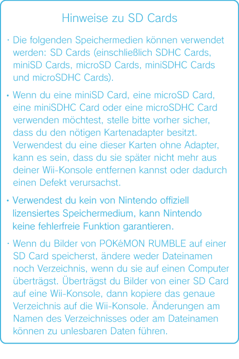

16 |
Das Pausenmenü |
 |
Drückst du während des Spiels auf Der Aufbau des Menüs variiert je nachdem, ob du dich im Terminal, in einer Stufe oder im Ring des Battle Royale aufhältst. Wenn du aus diesem Menü zum Terminal zurückkehrst, verlierst du alle Pokémon und Mit dem Nunchuk ist es nicht möglich, das Pausenmenü zu öffnen.
Wie du ein Foto schießt
Wählst du die Option FOTO SCHIESSEN aus, wird ein Foto des aktuellen Spielgeschehens aufgenommen. Wenn du mit dem Foto zufrieden bist und mit JA bestätigst, wird das Foto im JPEG-Format auf der SD Card gespeichert und der Dateiname sowie der Name des Ordners, in dem es abgelegt wurde, werden angezeigt. Das Pausenmenü ist auf deinen Fotos nicht abgebildet.
Deine Fotos kannst du dir u. a. im Fotokanal oder auf einem PC anschauen.
Die Rechte an den in Pokémon Rumble gemachten Bildern liegen bei The Pokémon Company und anderen Rechteinhabern. Bitte verwende die Bilder nur im Rahmen der Copyright-Bestimmungen.
Wie du Fotos wieder löschen kannst Möchtest du Fotos von einer SD Card löschen, musst du diese zunächst in die Wii-Konsole einstecken und dann die Option SD CARD auswählen, gefolgt von FOTOS LÖSCHEN. Mittels der Option FOTOS LÖSCHEN werden alle Fotos, die du in Pokémon Rumble aufgenommen hast, gelöscht. Einzelne Fotos können nicht gelöscht werden.
 |
 , öffnet sich das Pausenmenü. Vom Pausenmenü aus kannst du zum Titelbildschirm oder zum Terminal zurückkehren oder ein Foto des Spielgeschehens schießen. Solange du dich im Pausenmenü befindest, wird das Spielgeschehen angehalten.
, öffnet sich das Pausenmenü. Vom Pausenmenü aus kannst du zum Titelbildschirm oder zum Terminal zurückkehren oder ein Foto des Spielgeschehens schießen. Solange du dich im Pausenmenü befindest, wird das Spielgeschehen angehalten. |
 |
 |